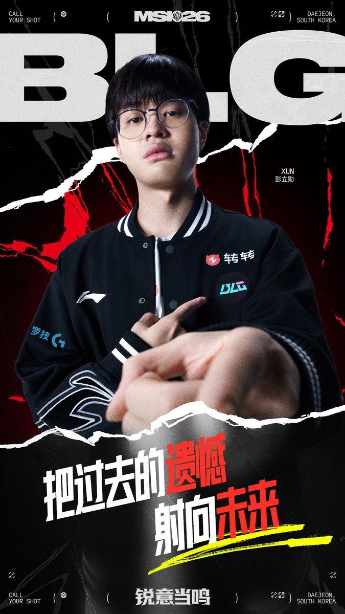

真是拿你没办法，坐好了！在这场万众瞩目的BLG对阵T1的BO5巅峰对决中，BLG最终以3-2的比分惊险拿下胜利，时隔777天再次在国际赛场击败T1。而这场荡气回肠的胜利背后，Xun在决胜局掏出的绝活千珏，绝对是神一般的存在！
决胜局中，Xun的千珏从开局就展现了恐怖的统治力，完美诠释了什么是极致的打野节奏。前期他不仅在野区疯狂发育，更是精准控到了整整七层印记，将千珏的印记机制利用到了极致。面对Oner巨魔的入侵，他不仅没有退缩，反而利用大招极限拉扯，配合队友支援完成反杀拿下一血，直接将T1的野区撕开了一道巨大的缺口。
随着比赛进入中后期，Xun的千珏已经化作一头无法阻挡的野兽。在关键的大龙团战中，T1试图偷龙扭转局势，却被BLG敏锐察觉。Xun不仅果断进场抢下大龙，更配合队友打出0换4的毁灭性团战，顺势收下土龙魂。在随后的高地决战中，多兰的小纳尔甚至无法承受Xun千珏的火力，见面即被融化。最终，BLG大军压境强拆基地，而Xun也以3/0/6的完美战绩、90%的超高参团率，毫无悬念地斩获了决胜局MVP。他用一场游龙般的表现，彻底打穿了T1的防线，堪称BLG赢下比赛的最大功臣！
决胜局中，Xun的千珏从开局就展现了恐怖的统治力，完美诠释了什么是极致的打野节奏。前期他不仅在野区疯狂发育，更是精准控到了整整七层印记，将千珏的印记机制利用到了极致。面对Oner巨魔的入侵，他不仅没有退缩，反而利用大招极限拉扯，配合队友支援完成反杀拿下一血，直接将T1的野区撕开了一道巨大的缺口。
随着比赛进入中后期，Xun的千珏已经化作一头无法阻挡的野兽。在关键的大龙团战中，T1试图偷龙扭转局势，却被BLG敏锐察觉。Xun不仅果断进场抢下大龙，更配合队友打出0换4的毁灭性团战，顺势收下土龙魂。在随后的高地决战中，多兰的小纳尔甚至无法承受Xun千珏的火力，见面即被融化。最终，BLG大军压境强拆基地，而Xun也以3/0/6的完美战绩、90%的超高参团率，毫无悬念地斩获了决胜局MVP。他用一场游龙般的表现，彻底打穿了T1的防线，堪称BLG赢下比赛的最大功臣！
